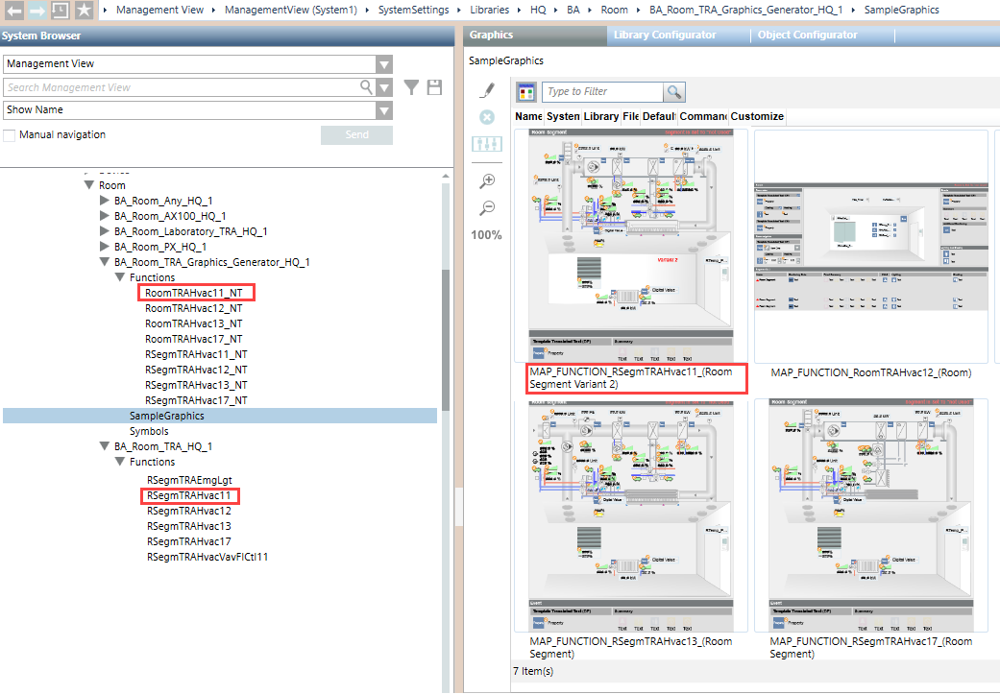

Adapt RC-Specific Libraries for Room Graphics
Certain requirements must be fulfilled to generate RC-specific room and segment templates as graphics. The manager at the RC must perform the work.
The generation concept for room graphics is contingent on the following conditions:
- A template for a room or segment is available;
- A function is available for the room or segment.
The following extensions must be made to create a RC-specific room or segment graphic:
- A room mapping graphic must be created. The syntax must follow the rules MAP_FUNCTION_RoomTRAHvac12_(Room And Segment).
- A function must be created with a prefix _NT (no template) for the room mapping graphic.
Default behavior with template:
The headquarters function RSegmTRAHvac11 is in folder BA_Room_TRA_HQ_1. The graphic template TRA_APP_Room_Hvac11_None_11 is assigned to this function.
Behavior with graphic page:
Funktion RSegmTRAHvac11_NT is in folder BA_Room_TRA_Graphcis_Generator_HQ_1. This function is assigned in folder SampleGraphics, graphic page MAP_FUNCTION_RSegmTRAHvac11_(Room Segment Variant x).
